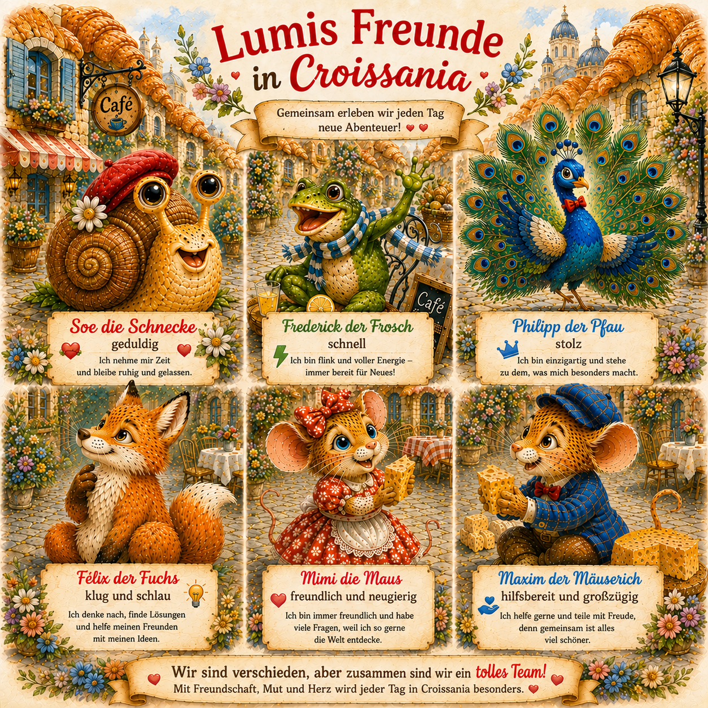

Kinderbuch über Gefühle
Lumi der Luchs geht auf Gefühlsreise – Neid in Croissania
In dieser Kindergeschichte begegnet Lumi der Luchs dem Gefühl Neid und entdeckt, dass auch schwierige Gefühle etwas erzählen können.
Ein Kinderbuch über Gefühle, Unterschiede, Freundschaft und Teilen – und darüber, dass jeder Mensch auf seine eigene Weise besonders ist.
🐾 Mit Merkvers:
Auch dieses Lumi-Abenteuer gibt Kindern einen kleinen Gedanken mit, der sich leicht gemeinsam erinnern lässt.
Auch dieses Lumi-Abenteuer gibt Kindern einen kleinen Gedanken mit, der sich leicht gemeinsam erinnern lässt.
Lumis Freunde in Croissania
